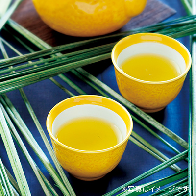
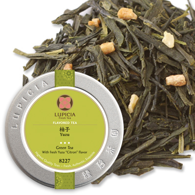

LUPICIA 8296 · g13108296
유자
柚子
Yuzu
수량한정아이스티 추천


完熟の甘やかな香り。柚子の季節を味わうお茶。
完熟の柚子を思わせる華やかで甘い香りをまとわせた上質な煎茶。果皮をブレンドして風味豊かに仕上げ、すっきりと爽やかな余韻に素材の風味が際立ちます。
すっきりとした後味の日本茶にみずみずしい柚子の香りを重ねたフレーバードティー。
美しい薄緑色の水色と爽やかな柚子の余韻が、暑さの残る秋に清涼感を味わわせてくれます。アイスティーにもおすすめです。
- 상품번호
- 8296
- 상품 형태
- 50g 캔입
- 가격
- 1,310円
- 판매 안내
- ※계절한정・10~1월경
※상미기한：제조일로부터반년 - 원재료
- 緑茶、ユズピール／香料※商品の改定などにより、商品パッケージの記載内容が上記内容と一部異なる場合がございます。
- 원산지
- 日本（茶）※商品の改定などにより、商品パッケージの記載内容が上記内容と一部異なる場合がございます。
- 찻잎
- 2.5-3g
- 물
- 90-100℃
- 우림 시간
- 1-1.5分
- 우림 횟수
- 1-2回
다른 포장
보관된 상품 정보 갱신일: 2026-10-18